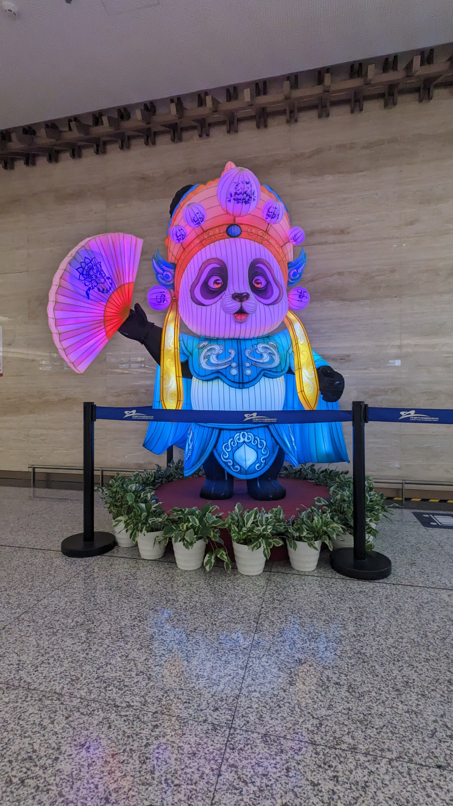
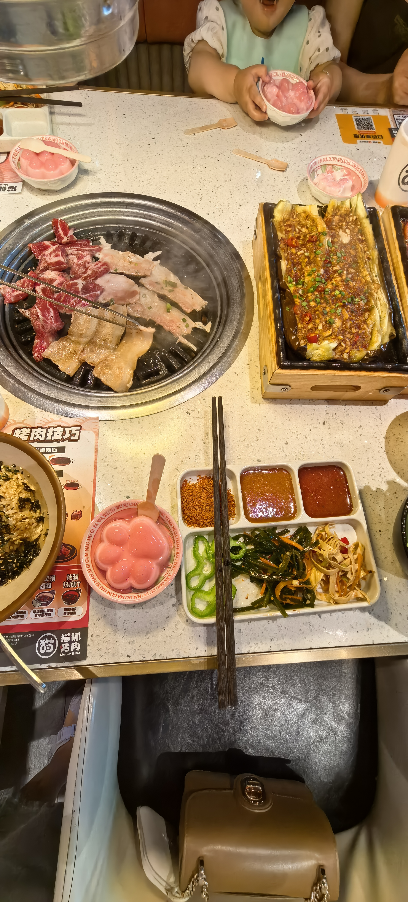
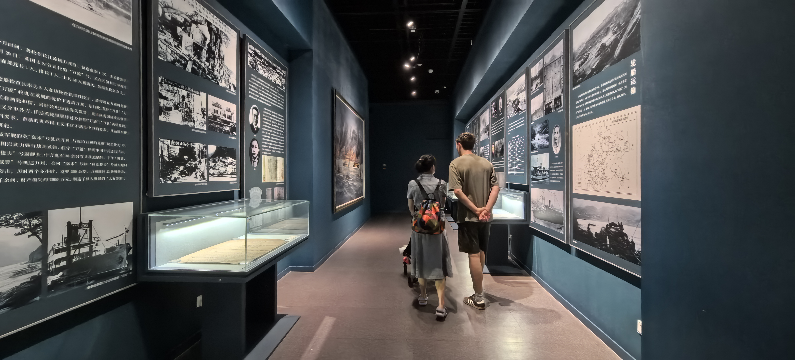
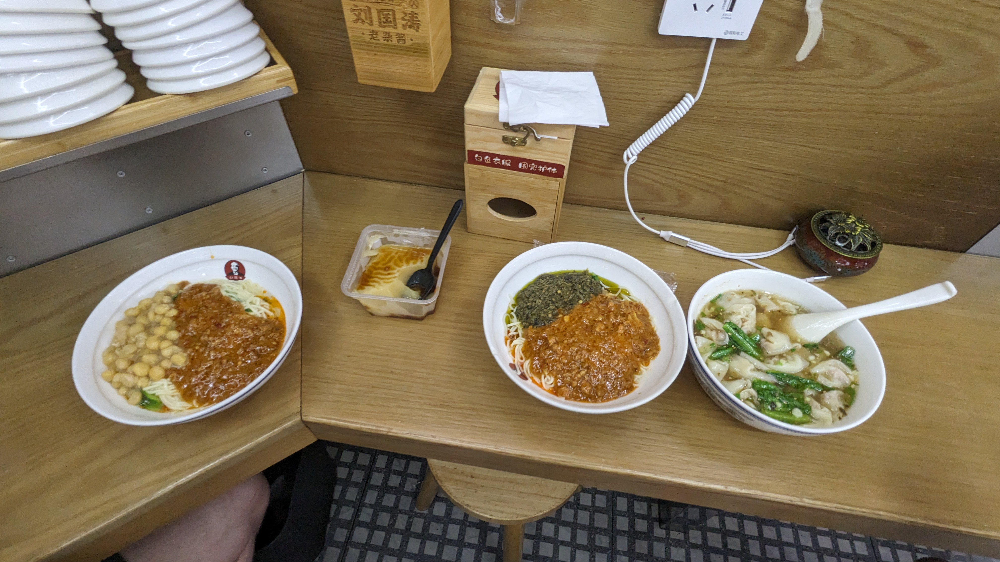
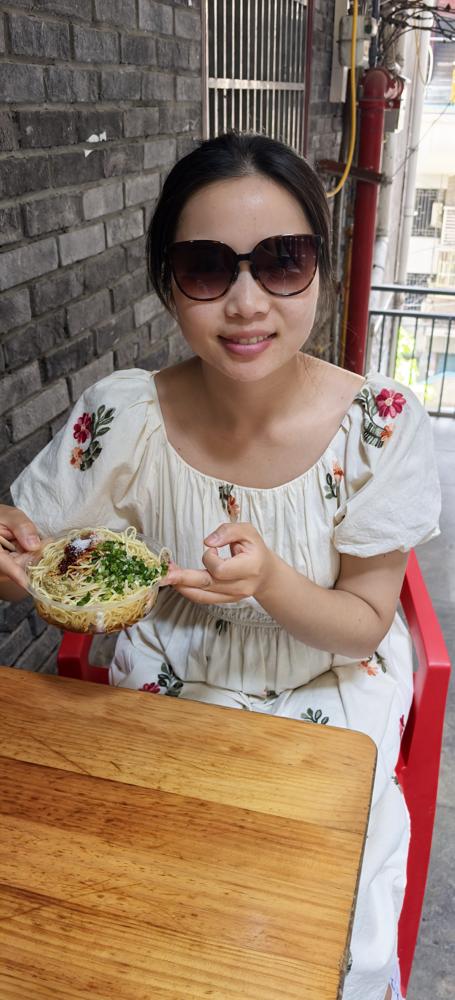
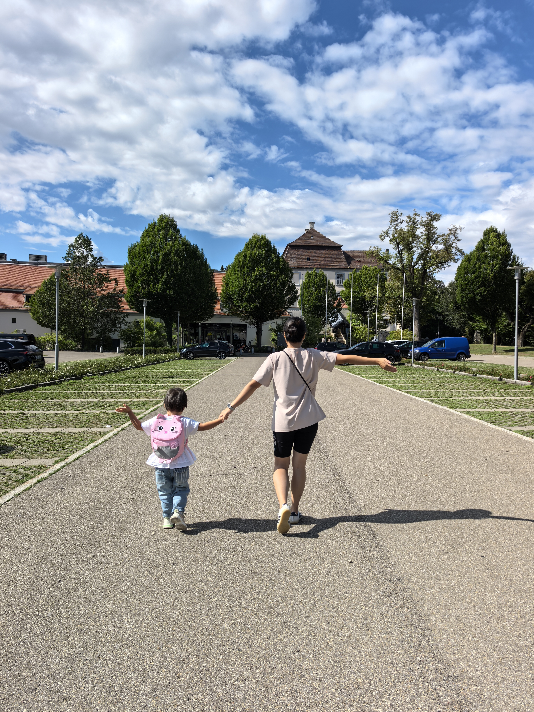
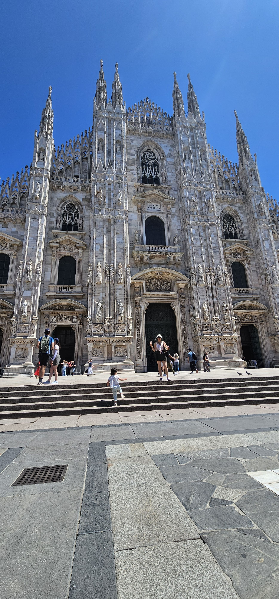
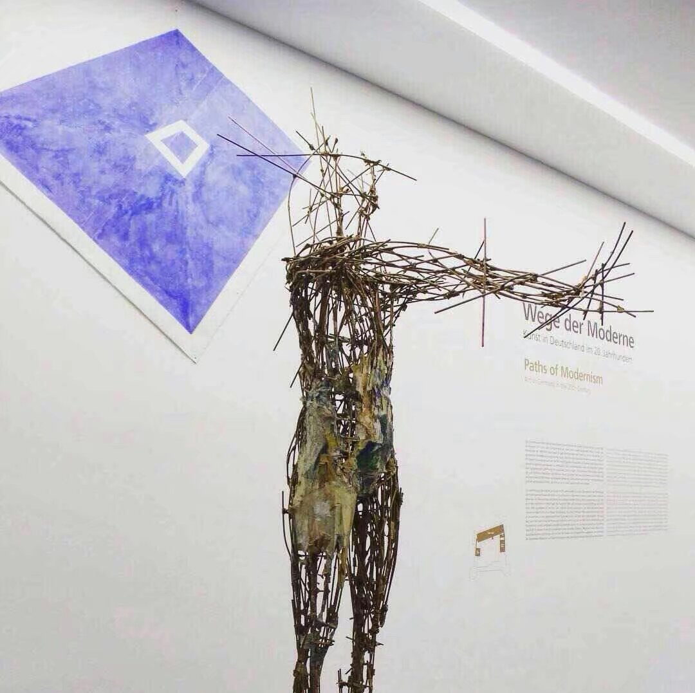

Marketing ist für mich kein Spiel, sondern eine Strategie. Es ist auch kein reines Berufsfeld, sondern eine Leidenschaft!
Ich bewege mich zwischen zwei Kulturen: Deutschland, China und drei Welten: Marketing, Soziologie und Wirtschaft.
Geboren und aufgewachsen in China, aktuell beruflich im B2B-Marketing in Deutschland, fasziniert mich vor allem eine Frage: Warum denken, handeln und entscheiden Menschen so, wie sie es tun?
Ich mache mir immer Gedanken über soziale und kulturelle Ereignisse. Ich beobachte gerne, stelle Fragen und suche nach Zusammenhängen. Der Fremde – mein Eindruck von Georg Simmel – spielt eine wichtige Rolle in jedem sozialen Milieu.
Ganzheitliche Strategien für nachhaltiges Wachstum statt kurzfristiger Kennzahlen.
Ich verwandle kulturelle Unterschiede zwischen Menschen und Ländern in einen strategischen Vorteil.
Marketing als Zusammenspiel aus Verhalten, Struktur und Gesellschaft gedacht.
B.A. und M.A. in 4 Jahren, deutlich vor der Regelstudienzeit. Ja, ich bin stolz auf mich!
Soziologie und Marketing? Für mich kein Widerspruch, sondern ein perspektivischer Vorteil.
Vieles passiert in diesem Jahr. Neue Rolle im Job, Schwangerschaft, neues Baby, alles gleichzeitig. Challenge accepted!
Ich bin stärker geworden. Beruf und Familie? Das manage ich gut.
Inhouse-Marketing von 0 auf 1 aufgebaut. Die Ergebnisse zeigen den Erfolg: von Leadgenerierung über Kampagnensteuerung bis zur Automatisierung läuft reibungslos.
KI ist mein Buddy, im Job und privat. Ich bin überzeugt: Diese Kompetenz macht den Unterschied.
Bin gespannt!







Für mich ist Marketing nicht nur Kommunikation. Es verbindet Strategie, Psychologie, Kultur und ein tiefes Verständnis dafür, warum Menschen entscheiden, wie sie entscheiden.

Jede Kampagne, jede Visualisierung, jedes Storytelling ist wie eine neue Episode – unterschiedlich im Inhalt, aber immer verbunden durch denselben Kern, dieselbe Botschaft und denselben Stil.
Marketing ist keine Aneinanderreihung einzelner Aktionen oder Kampagnen, sondern eine fortlaufende Serie. Egal, mit welcher „Episode" jemand einsteigt, die Hauptgeschichte bleibt ihm verständlich.
Brand spiegelt die Identität, die Werte und die Energie einer Marke wider. Nur ein gesundes, authentisches Marketing kann ein Unternehmen langfristig lebendig halten und Wachstum von innen heraus fördern.
Strategie gibt die Richtung vor. Verständnis macht sie relevant.
In einer Welt, die sich ständig verändert, reicht ein einmal erlernter Wissensstand nicht aus.
Für mich bedeutet Self-Education mehr als das Aneignen neuer Fähigkeiten. Es ist eine Haltung, offen zu bleiben, Fragen zu stellen und sich nicht mit dem Bekannten zufriedenzugeben.
Strategie · Management · Branding
Technologie · Innovation · Zukunft
Kultur · Perspektiven · Kommunikation
Ich lerne am liebsten dort, wo Theorie auf echte Erfahrung trifft.